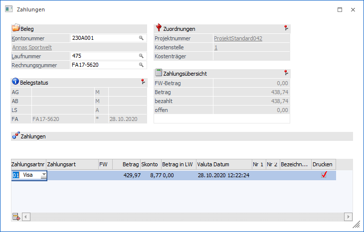
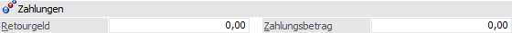

Im Menüpunkt…
1 Erfassen
1 Zahlungen
…können Zahlungen zu bereits gedruckten Fakturen erfasst werden.

Ø Kontonummer
Eingabe der Kontonummer (Kunde bzw. Lieferant) für den eine Zahlung erfasst werden soll.
Ø Laufnummer
Laufnummer des Rechnungsbelegs, für den eine Zahlung erfasst werden soll. Über den Matchcode bzw. die F9-Taste kann nach dem gewünschten Beleg gesucht werden.
Ø Rechnungsnummer
Nummer des Rechnungsbelegs, für den eine Zahlung erfasst werden soll. Über den Matchcode bzw. die F9-Taste kann nach dem gewünschten Beleg bzw. der Rechnungsnummer gesucht werden.
Achtung
Wird im Laufnummernmatchcode die der Button "Alle Belege" gedrückt, wird zusätzlich das "Belege"-Programm geöffnet.
In den Bereichen Belegstatus, Zuordnungen und Zahlungsübersicht werden Informationen zum aufgerufenen Beleg angezeigt.
In der Bildschirmtabelle können anschließend die für die Zahlung relevanten Daten eingegeben werden.
Eingabefelder
Ø Zahlungsartnr
Aus der Auswahllistbox kann eine Zahlungsart ausgewählt werden. Pro Beleg sind auch mehrere Zahlungsarten erlaubt.
Ø Zahlungsart
Bezeichnung der unter "Zahlungsartnr" gewählten Zahlungsart
Ø FW
Aus der Auswahllistbox kann eine Fremdwährung gewählt werden, in der die Zahlung durchgeführt wurde.
Ø Betrag
Hier wird der Zahlungsbetrag eingetragen, der mit der Zahlungsart bezahlt wurde.
Ø Skonto
Eingabe des Skontobetrags
Ø Betrag in LW
Wurde unter FW eine Fremdwährung ausgewählt, wird hier der Betrag in Landeswährung 1 vorbelegt. Bei der Umrechnung wird natürlich die im FW-Stamm angegebene Notierung berücksichtigt.
Ø Valuta-Datum
Hier kann das Valuta-Datum der Zahlung verändert werden.
Ø Nr. 1/Nr. 2
Hier können zusätzliche Texte (wie z.B. Kreditkartennummer und Gültigkeit der Kreditkarte) eingetragen werden.
Ø Drucken
Ist die Checkbox aktiviert, wird für diese Zahlungsart ein Beleg gedruckt. Welcher Beleg gedruckt wird, hängt von der Einstellung der Zahlungsart ab.
Sind alle Faktoren, die die Zahlung betreffen, eingegeben worden, kann mit dem OK-Button bzw. der F5-Taste die Zahlung abgespeichert werden. Dadurch werden auch die entsprechenden Buchungen in der WinLine FIBU im entsprechenden Stapel bereitgestellt. Konkret bedeutet dies auch, dass, sofern die betroffene Faktura (der Offene Posten) in der FIBU noch nicht ausgeglichen ist, die Zahlung dieser Faktura zugeordnet wird.
Hinweis

Wenn die Eingabefelder "Retourgeld" und "Zahlungsbetrag" gewünscht sind, können diese eingeblendet werden, indem die Option "Eingabe von Retourgeld in allen Zahlungsfenstern" in den "FAKT-Parametern" unter "Belege/Erweiterte Optionen" aktiviert wird. Nähere Infos zu dieser Einstellung können aus dem "START-Handbuch" entnommen werden.